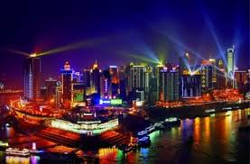
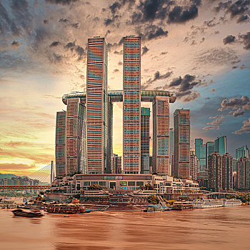

朝天门码头位于重庆市东北嘉陵江与长江交汇处，是重庆最大的水码头。朝天门原题“古渝雄关”，曾是重庆十七座古城门之一。南宋（1127-1279）偏安临安后，时有钦差自长江经该城门传来圣旨，故得此名。 朝天门码头自古江面樯帆林立，舟楫穿梭，江边码头密布，人行如蚁。门外沿两边江岸有不少街巷，虽以棚户、吊脚楼居多，可也热闹成市，商业繁盛，门内则街巷棋布，交通四达。所以直到今天，这一带仍是城内最繁华的商业批发零售区。
朝天门左侧嘉陵江纳细流汇小川，纵流1119千米，于此注入长江。每当初夏仲秋，碧绿的嘉陵江水与褐黄色的长江水激流撞击，漩涡滚滚，清浊分明，形成“夹马水”风景，其势如野马分鬃，十分壮观。右侧长江容嘉陵江水后，声势益发浩荡，穿三峡，通江汉，一泻千里，成为长江上的“黄金水段”
朝天门是两江枢纽，也是重庆最大的水码头，自古江面樯帆林立，舟楫穿梭，江边码头密布，人行如蚁。门外沿两边江岸有不少街巷，虽以棚户、吊脚楼居多，可也热闹成市，商业繁盛，门内则街巷棋布，交通四达。所以直到今天，这一带仍是城内最繁华的商业批发零售区
